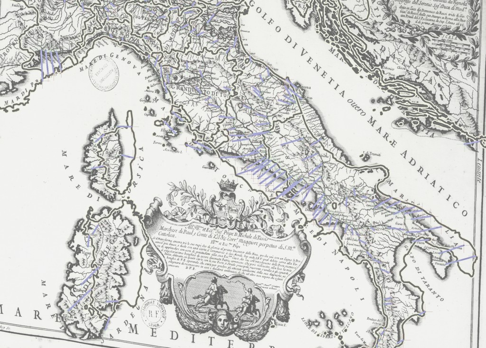
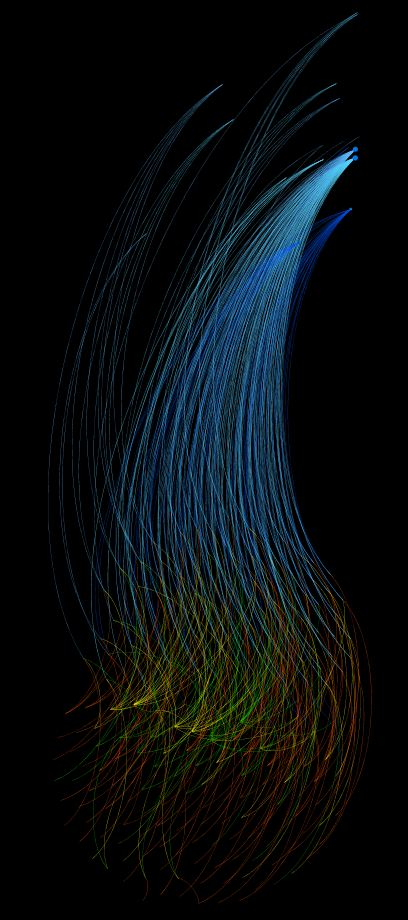
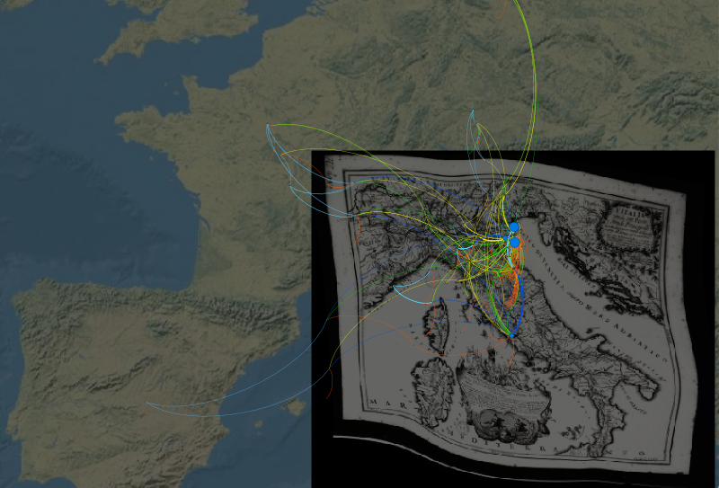

It’s the end of the year, and it’s time to cycle out the old, staid DHS background for a new, hip background image. Old 2010 was represented by this image:


Historical Map of Italy in 1695, with rectification points. This map, from the Bibliotheque nationale de France, was used to lift historic route and network information in Italy for the Mapping the Grand Tour project.
New and improved 2011 (at least the first part of it) is summed the Venice Plume:


The Venetian module of operas created in the 17th and early 18th centuries. The Venetian module is the largest, consisting of over 100 operas, 18 composers, 20 librettists, 75 dedicatees, 15 places and 2 theaters.
The plume was created by geolocating the various theaters, cities and states connected to operas of the 17th and 18th century and then organizing the related operas, dedicatees, librettists and composers using the Fruchterman-Reingold algorithm. The result is a visually striking representation of geography simultaneously intertwined with network topology. Visually, it claims that Madrid, Paris, Potsdam, Bavaria, Monaco and Parma are more tied culturally to Venice and specifically the Teatro San Salvatore than they are to the next largest module, centered on the Teatro San Cassiano. And more telling, it is a distinction made by the cold calculations of network analytical methods, and not the hot-blooded decisions of cartographers.
It’s also not the stodgy historical GIS that finds rectification of historical maps and the lifting of features therefrom to be so exciting. The upgrade path, as outlined by Terry Harpold in Ex-foliations: Reading Machines and the Upgrade Path, is alive and well in the Digital Humanities, and its constant press to find more novel ways of abstracting and representing data overwhelms the push for clear, sophisticated scholarship. KOSes need not be sustainable, as long as they’re semantically sexy, and large-scale projects need never advance their putative discipline, as long as they produce stunning visualizations that enrapture the lay public (or, more importantly, grant funding agencies). All the while, decidedly unsexy work that advances the understanding of literature and history builds slowly on increasingly well-understood methodologies.


The Venetian module, organized using a different algorithm, overlaid on the rectified map of Italy from the BNF, laid on top of a publicly available physical geographic map of the world.
It’s not so easy to bring them together, because the differences in maturity of methodology reflect a differentiation of goals–one to push knowledge representation to its epistemological limits, the other to use clear and well-described digital methods to advance the scholarship of traditional humanities subjects (though likely in non-traditional reformulations, such as Global Literature or Big History). It is not enough to separate the camps, as if one were media studies and other were digital literature or digital history–both consider themselves (at least based on the self-identification of an admittedly small sample) to be in overlapping disciplines and their work reflects simultaneous problemitization of the medium, the evidence and knowledge/information/data.
It is perhaps time to explore modularization within the production of scholarly media, wherein components of research projects are integrated but hot-swappable, such that differing theories of network relationships could be simultaneously pursued alongside a stodgy old historical gazetteer using established ontologies, in the same group, sometimes by the same scholar, and the media can be analyzed as argument, as abstraction, as evidenciary practice, as curated dataset and even as collaboratively produced software. Or perhaps this is already being done somewhere, in which case I would love to hear about it.
To 2011, and all the new rectified historical maps, and all the new uses of industry software for unintended academic purposes, and all the increased development of the kinds of basic tools that John Unsworth said we needed ten years ago, and all the even more arcane arguments about ontologies, and possibly even a semantic web, and all the radical visualizations of knowledge (even if they’re only on display at a presentation or on a website with none of the critical examination necessary for rigorous scholarship), and all the dull but utilitarian Google Maps-enabled representations of culture, history and politics, and the continued fracture and reunification of the Digital Humanities, and bright colored lines on black backgrounds representing the connections between people, regardless of whether or not we’re yet at the point where we can comfortably say more than that it must be valuable because it is so beautiful.